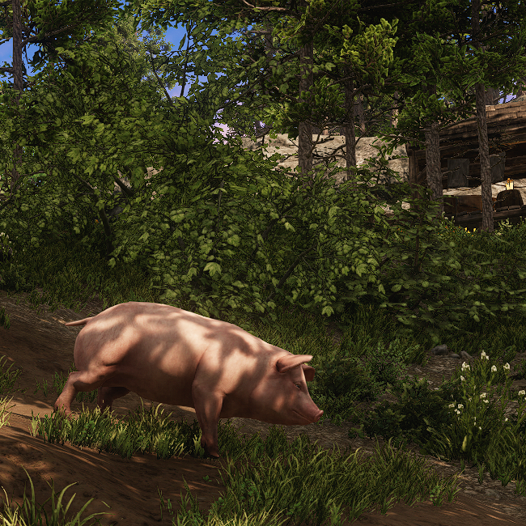
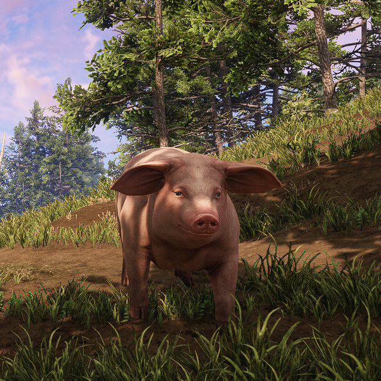

Porcos são encontrados apenas em fazendas, por conta de seu comportamento dócil. Quando em contato com outros animais são mortos rapidamente.
Sua carne macia e saborosa é utilizada em inúmeras receitas, desde assados mais básicos até pratos exóticos.
